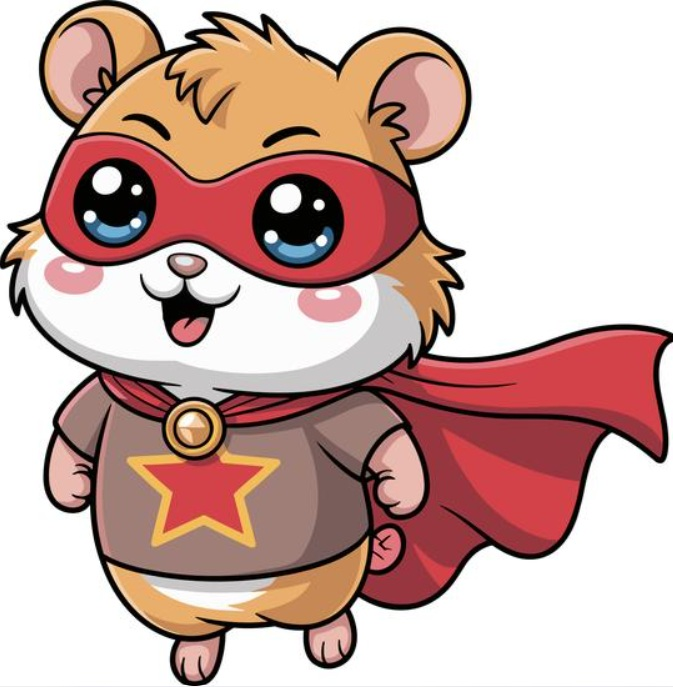

Qui suis-je ?
Je suis un hamster venu d'une planète lointaine. Ma mission est de sauver l'univers grâce à mes super-pouvoirs et mes graines de tournesol magiques !
Mes super-pouvoirs
🚀 Je peux voyager à la vitesse de la lumière.
👻 Je peux devenir invisible.
S🌟 Mon pouvoir secret : éternuer des étoiles !
Ma devise
"Un grand pouvoir implique beaucoup de graines."